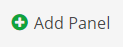
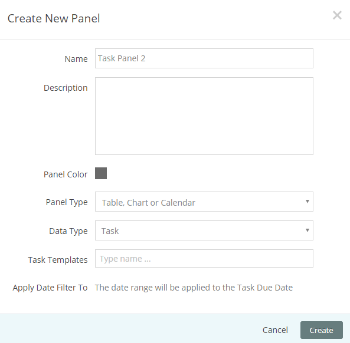
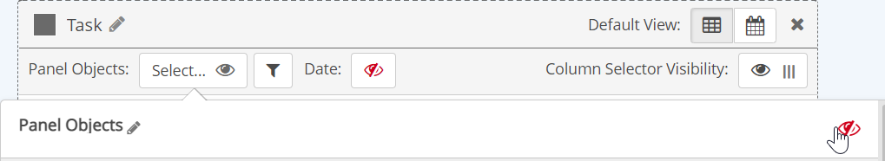
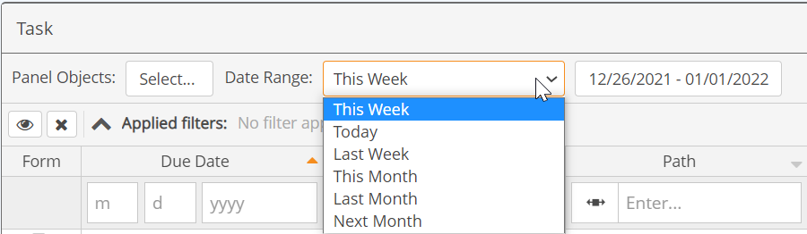

A Task Panel will show tasks that are associated with requirements (numeric or non-numeric), as well as those associated with events or workflows. A task panel may be configured to show only tasks associated with specific Task Templates, or all tasks (with or without a Task Template).
You can configure the task panel to show users just their own assigned tasks and provide the Form button to allow them to access a form to complete their tasks. For supervisors, you may configure the panel to show tasks they have assigned so they can view task status for follow-up. Within the panel, tasks may be filtered in various ways – by assignee or assignor, facility, associated facility, completion status, etc.
Tasks associated with events or workflows may also be viewed and completed from an Event Panel or Workflow Panel, but the columns available for the grid display will be specific for those data types. A Task Panel can also include both workflow and event-related tasks, as well as those only related to requirements.
After adding a task panel to a page, you can configure the panel in these ways:
For management purposes, you can also add a link to the Task Edit page in order to edit task settings from the Management System (link opens in a new browser tab).
To add a task panel to a page:
From the page view, select Settings.
Click Add Panel.

From the Add New Panel dialog, click Create New Panel.
Or, select panel template(s) to add and click Add selected Panels.
Enter a name for the panel and optional description.
Choose a panel color (color of the top bar and frame).
For the Data Type, select Tasks.
Optionally, select Task Templates to filter for tasks by the associated task template.
If no task templates are selected, all templates and tasks (with or without task templates) will be included in the panel display.
To search task templates, enter a few characters of the task template name, then select from the matches offered. You may select multiple task templates. If no task templates are selected, all tasks (including those without task templates) are included.
The Date Filter is applied to the Task Due Date.

Select Create.
Once the panel has been added to the page, click Edit Panel Contents to configure the settings. You will be prompted to save the page first before proceeding to the configuration screen.
Panel Objects: Panel object selections will filter tasks for those associated with the selected objects or by their parent objects. Tasks are filtered first by the Task Templates you select for the panel. If you want to filter tasks in the panel by location (i.e., by Facility), you can select panel objects.
In the Management System, tasks are associated with monitored requirements. The filter will be applied to the location of the requirement, or a specific requirement, if selected.
To select system objects for filtering events: See Set Panel Objects Filter. Objects used in the panel may be any subset of the objects selected in the page object selector.
You can disable the object selector in the panel if you want to use only the objects selected for the page and not allow users to edit selections at the panel level.
To disable the object selector:
Click the Panel Objects box.
Select the eyeball to disable it.
Click Apply.

To select associated objects for tasks: See Set Panel Objects Filter. Objects used in the panel may be any subset of the objects selected in the page object selector.
If the Ignore Page Filters panel setting is active, you will override any of the objects selected in the Page Objects filter. If Show Users All Objects in System is active in the page and/or panel settings, users may select any object in the system, regardless of their Management System object permissions. Users will only be able to view or complete task instances in which they are either Assignor or Assignee.
Date Range: The date range defines the period for the tasks displayed in the panel. The date range applies to the Task Due Date.
By default the panel will use the date range selected for the page. However, a date range selector may be enabled for the panel, which will operate independently of the page date selector. You may pre-configure the panel to show the relative period that users will need (such as This Month). You may also decide whether you want users to be able to set a custom date range with specific start and end dates, or use only the pre-configured date range. To configure the panel date range, see Panel Date Selector.

Default View: Select either the Table or Calendar icon to set the default view.
Column Selector Visibility: Use this option to enable or disable the column selector button. When enabled, users can choose to hide or show columns in the table display to customize the view and to select columns for downloading to Excel.
To edit content for the panel and choose fields to show on the Task Form:
Click Edit Panel Contents, then select Advanced.
Task Templates: Add the task templates that you want to include in the panel. If None, all tasks that apply to the page or panel objects will be displayed.
Apply Date Filter To: Not editable. The date filter will be applied to the Task Due Date.
Show Tasks: To filter for tasks by the user, check Assigned to User Viewing Panel (user is assignee) and/or Assigned to User Viewing Panel (user is assignor).
Hide Task Completion Fields in Form View: Check the task completion fields that you do not want to show on the form. By default, only the Completion Status, Completion Date and Comments fields are shown. Other optional fields are hidden.
Close Workflow Button Label: Type the desired name of the button that closes the workflow. The name appears on the workflow form.
Click Apply to apply settings.
Select Save to save changes to the panel. Also click Save to save the page after changes.
Table Column Display
The default columns displayed on the Task panel include:
Form: Opens the task completion form in the Portal (in a new tab). If there is an event log associated with the task, the page shows the fields on the event template. Note: In order for calendar links to default to Form, the column must be to the left of the Platform Link column, if that column is also included.
For tasks associated with multiple requirements, the only completion mode available in the Portal task completion form is the group mode. If you need to have users complete tasks for different requirements individually, use the Platform Link instead.
Due Date
Name
Path (of the associated requirement)
Requirement (name of associated requirement)
Assignee
Status: Complete, Not Complete, Dismissed
You can add additional columns from the Field Selector menu on the left and edit the column display.
Additional columns for a Task Panel include:
Platform Link: Opens the task completion form in the Management System. Can be used in place of or in addition to the Form link. The user must have permissions in the Management System.
Edit Task link: Will open the Task Edit link in the Management System in a new browser tab. The user must have task edit permissions in order to open the link.
Native Task fields: In addition to the default fields (above), this includes:
Assignor
Complete Status (%)
Completed By
Completion Date
Comply
Task Completion Comments
Cost to Complete
Description
Dismissed
Overall Complete Stats
Overall Dismissed
Task Template Name
Time to Complete (hours)
Calculated Status Fields (see Status Fields table below)
Fields from an event or workflow associated with a task, if any.
Associated Object Name
Both native and custom fields from objects associated with a task or the parent objects.
The status fields allow you to show task status in the way that makes the most sense to the intended users. The simple Status field with values of Complete, Not Complete or Dismissed is included on the panel by default. You can add any of the other fields as needed. For example, the Status Metric column gives administrators a view into compliance status for completed tasks. The following types of status-related fields are available.
Field
Values
Status
Complete
Not Complete
Dismissed
Status Metric
Open
Overdue
Completed on Time
Completed Past Due
Dismissed
Overdue
True
False
Overdue Status
Not Complete (<100% and not overdue)
Overdue (<100% and overdue)
Complete (=100% or dismissed)
Days Before Due Date
Due Date - Now (in days)
If Status=Complete or Dismissed, value is empty
Days Completed After Due Date
Completion Date - Due Date (in days)
If Status=Not Complete or Dismissed, value is empty